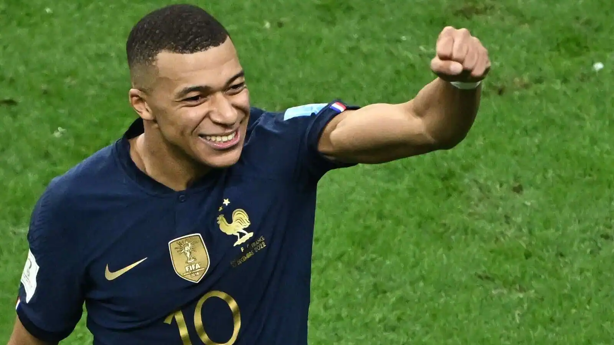

Just like that we are in the Semi Finals of the World's biggest tournament, the upcoming matches are Argentina vs Croatia and France vs Morocco! We start the day off with Argentina facing off Croatia, the last time these two faced was in the 2018 World Cup where Croatia beat Argentina 3-1! The scene is set Argentina's number 10,Messi vs Croatia's number 10, Modric. The fans are really blessed to have watched the careers of two world class players! The game kicks off and Argentina are gaining momentum and they get a penalty where Messi scores it with ease. The game continues and Argentina are playing through Messi. Julian Alvarez takes the ball and dribbles past 3 defenders to score the second goal, they are now leading 2-0. Croatia aren't looking to bright, the team is falling apart. MESSI dribbles a defender out of his ankles.....lays it off to Alvarez..... GOALLLL!!! Alvarez scores the final goal to secure them a spot in the World Cup Final !
Video from Youtube , "FOX SOCCER"
On to the next match, current World Cup Champions France vs Morocco! The game begins! Heres a cross in to the path of Theo Hernandez and what a finish! It's 1-0 , the French giants are up! Morocco need to rethink and stay focused in the game because they are the underdogs in this match! As the game goes on Morocco keep attacking and have the possesion for majority of the game and all of a sudden Kolo Muani scores another for France to secure the win and lead them to the final! France vs Argentina the scene is set!
Photo from "Mint"